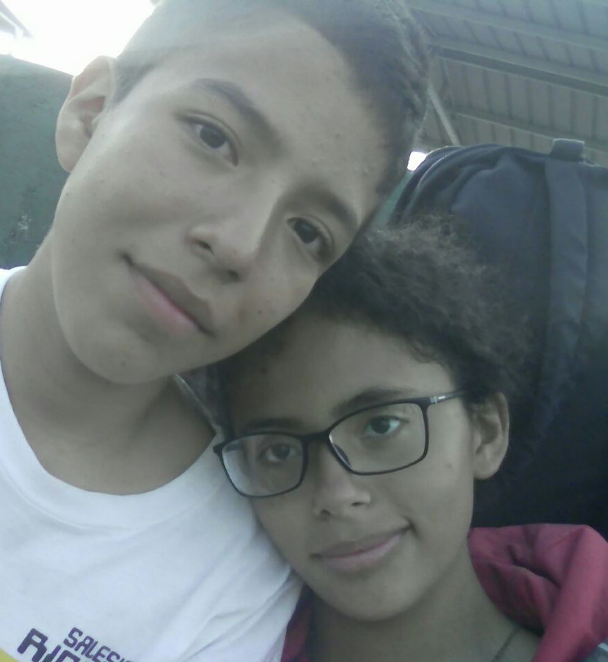
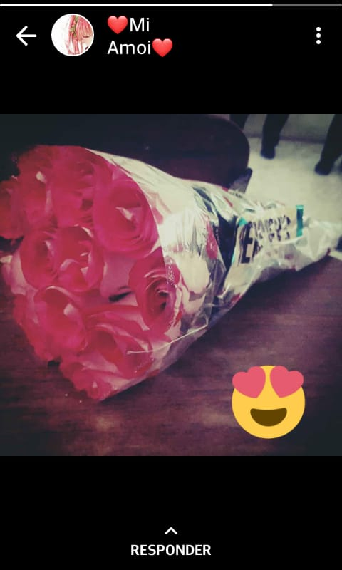
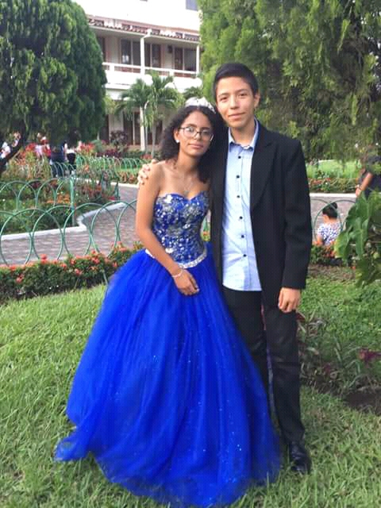
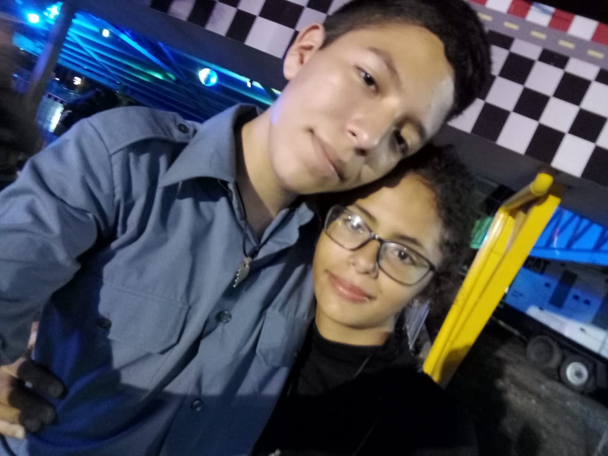
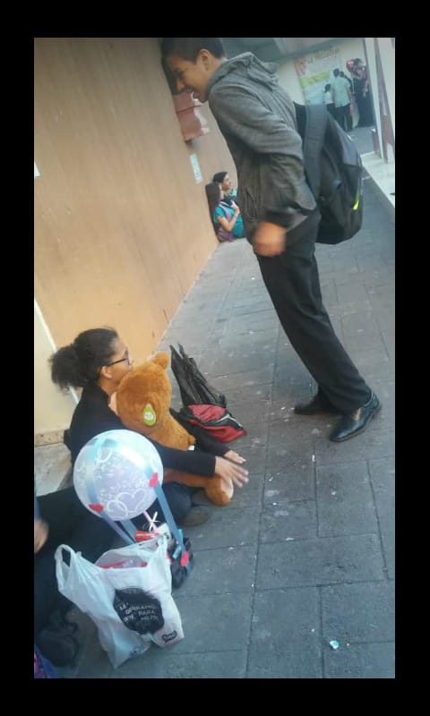
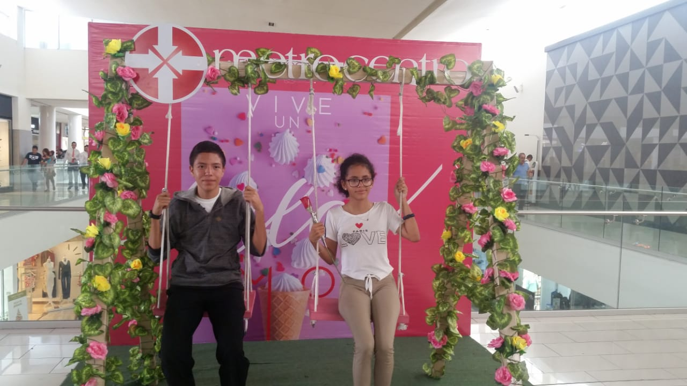
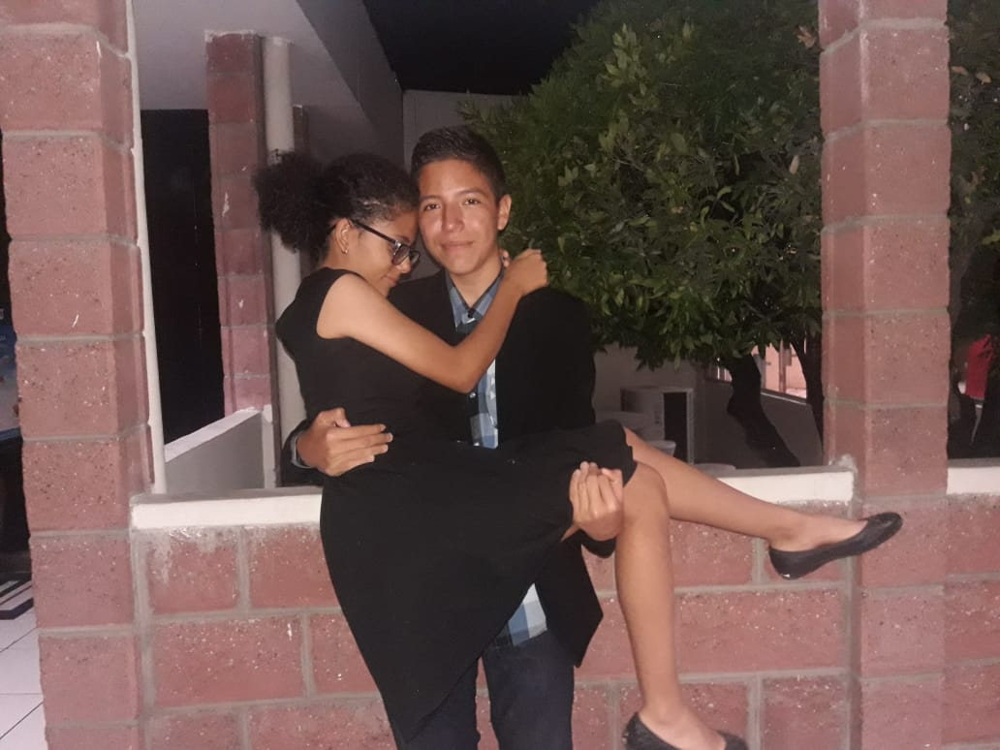
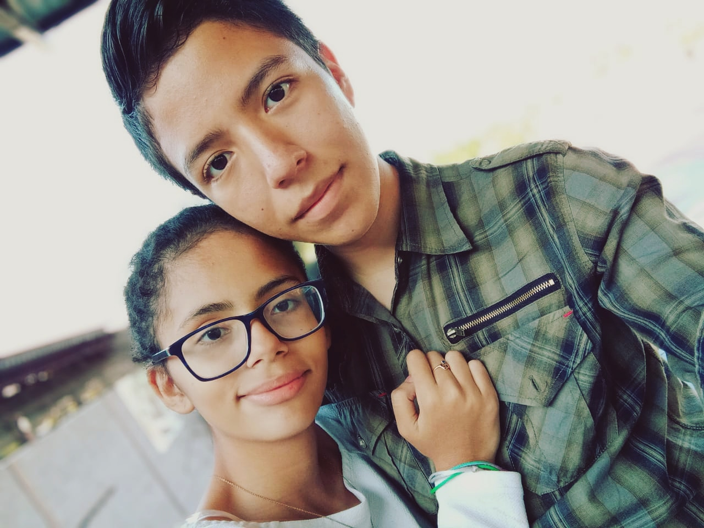
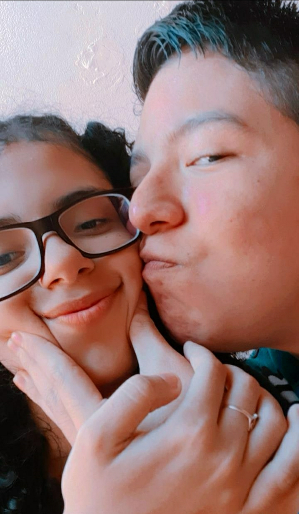
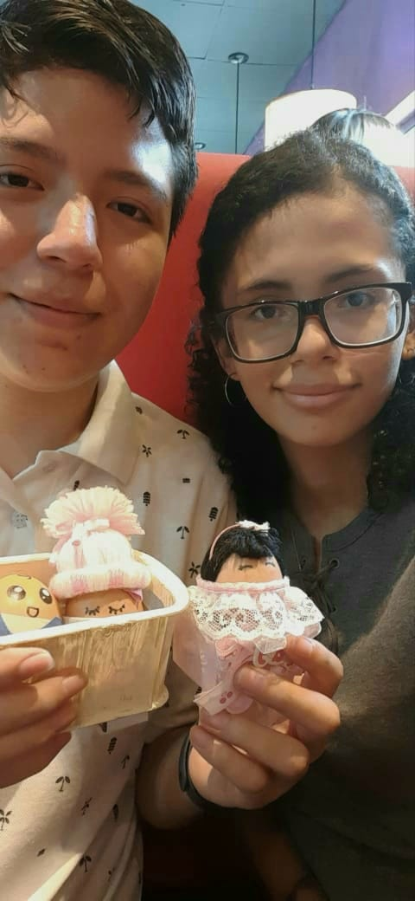

Nuestros recuerdos
Bueno...tengo muchos recuerdos de nosotros juntos...pero no tengo foto de todos, hagamos
una cronología y
pongo la foto de los que tenga ok?
"De los mejores momentos no hay fotos, no hubo tiempo de
tomarlas."
Conocernos
Nov. 2017
Recuerdo como fue la primera vez que te vi y hablamos...noviembre de 2017...cursos de verano del ricaldone, yo iba a robótica, tu a natación, llegaba temprano, y un día vi como había una chica de pelo colocho en las mesas de cemento leyendo...me preguntaba, ¿qué es lo más que puede pasar si le hablo? y para no pasar solo tanto tiempo bajé a hablarte...en eso vi como leías el primer libro de la saga de Percy Jackson...me llamaste más la atención, cuando llegué pensé "wow, es muy linda"...y así es como sin saber empecé a escribir este libro llamado "El primer y último amor de mi vida"
Primer foto y beso
2 Mar. 2018
Curiosamente, esta primer foto juntos, es del mismo día en que nos dimos nuestro primer beso...bueno, no nos dimos, sino que yo te lo robé xd fue el día de tu retiro, recuerdo al regreso yo estaba esperandote arriba, llegaste y nos quedamos hablando, en eso...recuerdo como me quedé fijamente viendote lo hermosa que eres mientras hablabas...y sin pensarlo mucho sin ni siquiera pensar si había algun maestro, me acerqué y te robé tu primer beso...fue el inicio de algo muy hermoso, uno de nuestros principales lenguajes del amor pienso yo, las muestras de cariño físicas, que por cierto, revisando los chats de esos días, tu no te ibas a dejar besar porque para ti tenía "novia" en ese momento...pero la verdad yo dejo a cualquier mujer por ti...por cierto x2 ese mismo día fue la primera vez que te preste mi sueter y lo ensuciaste :) no se ni como o de que pero me lo dijiste por chat xd me preguntaste que si lo podías lavar por eso, pero que no querías porque te gustaba como tenía impregnado mi olor...
Primer ramo
14 Jun. 2018
Esto es de cuando te di tu primer ramo de rosas, para nuestro 3° mes juntos, recuerdo que estabas tan feliz presumiendo tu ramo por todo el rical, estabas tan feliz que hasta lo publicaste en tu Instagram (creo que borraste la publicación) lo subiste de estado de whatsapp (de alli la foto) y hasta la pusiste como tu foto de perfil en whatsapp.
Tus 15 años
18 Ago. 2018
Recuerdo tanto ese día, como desde que te conocí me mostrabas que practicabas el bals con Segio...siempre me dio celos que el haya sido tu chambelan, pero creo a como está actualmente la situación agradeces que no haya sido así...igual apesar de todo, como ya te he dicho siempre me gusta recordar con cariño todos los momentos lindos que vivimos :c y ese día fue un día muy especial para ambos, recuerdo como desde que te vi en la Iglesia te veías tan linda...aunque super mayor por el maquillaje xd pero igual te veías muy linda, recuerdo como después de la misa nos fuimos a los jardines a la par a tomarnos fotos, y es cuando nos tomamos esta foto...luego recuerdo el como te fuiste en la limusina con Sergio a la sala de té y verte llegar para que tus damas de honor te tiren flores, y luego bailaron el bals...no recuerdo muy bien si hasta ese día fue que conocí a tu mami, y a la mayoría de tu familia, me gustó mucho la noche porque mis padres me dejaron bailar todo lo que quise contigo hasta ya algo tarde, creo nos fuimos a las 11...y justo recuerdo que me contaste que cuando me fui pusieron kpop xd la cena por cierto estaba muy rica, recuerdo que el arroz estaba buenísimo porque tenía pedacitos de queso derretido, en fin un día inolvidable.
Mi cumpleaños #14
15 Sep. 2018
Este día fue cuando con nuestros amigos de 8° me celebraron mis 14 años en metro, fuimos primero a la pizza hut, donde recuerdo china y marian hicieron un desastre con la pimienta xdd ya luego fuimos a los juegos, y es donde nos tomamos una de mis fotos favoritas de todos los tiempos, alli nos subimos al tagadá xdd varias veces y yo sacrifiqué mi pobre bracito para evitar que salieras volando xD en fin, creo el mejor cumpleaños que he tenido.
Primera vez...y en tu casa también
30 Oct. 2018
Según revisé...al parecer ya teniamos todo muy preparado para ese día jeje...lo pasamos hablando por días...y recuerdo esa primera vez tu me fuiste a traer al rical...nos fuimos en bus, pasamos comprando condones ME HICISTE COMPRAR CONDONES mejor dicho :) que todavía recuerdo esa estafa, se supone eran sabor a frutas y pura vrga :v (que raro se ve el pacman en esta tipografía xD) pero bueno...de alli nos fuimos a tu casa..y tuvimos sexo anal por primera vez, se sintió tan bien dios mio...🤤...recuerdo que te hice llorar ese día y me sentí mal por eso...igual tu quisiste seguir :) ya no doy más detalles...pasamos todo el día en tu casa y la verdad fue uno de los mejores días de mi vida, hicimos un pacto con nuestros cuerpos, como uno solo, y fue tan lindo el sentir como si ya estuvieramos casados y vivieramos juntos...me cocinaste el almuerzo...vimos peliculas..era perfecto, daría lo que sea por volver a esos días...
Cumpleaños de mi hermano
3 Nov. 2018
Este día fue de cuando te invitamos junto con tu hermana y Milo al cumpleaños de mi hermano en el complejo de ANDA...la verdad no tengo muchos recuerdos de este día porque creo solo fue la tarde y por mi familia pues no pude pasar mucho tiempo junto a ti...igual me hubiera gustado que hubieras ido más veces y no solo esa...
Regalo de cubo
12 Dic. 2018
Para nuestro aniversario de 9° mes juntos me regalaste una almohada/peluche de un cubic rubik junto con un lubricante para cubos, la verdad, de los mejores regalos que me han dado, el cubo de almohada aún lo tengo en mi cama, duermo con el cada noche :c y el lubricante aún tengo, no se me ha acabado.
Regalo de San Valentin y Aniversario
14 Feb. 2019
Fue nuestro primer san valentin juntos y el día en que te regalé a Junior, ya ni se que es de él actualmente pero bueno, también fue el día que me diste ese globo aeroestático, que aúnconservo su canasta y los corazones que traía en mi cuarto
Primera cita
12 Mar. 2019
Creería la primera vez que salimos juntos así a algun lado solos, aunque creo esa vez nos escapamos con la Meli también pero aja xd primer año juntos...recuerdo que me dio pena tomarme la foto pero no se porque...
15 años de China
2 Ago. 2019
Esto fue en la fiesta de 15 de la china, que la verdad no tengo muchos recuerdos de la misma, si recuerdo en la sala de te tu fuiste de las primeras en llegar, estabamos en una mesa en la esquina, y disfrute mucho esa noche junto a ti, bailar contigo, y que en algun momento nos salimos del salón y nos tomaron esa foto que tanto amo...
Nuestra primera vez
1 Oct. 2019
La verdad que de esto si me recuerdo muy bien...no era primera vez que venias en mi casa, lo planeamos por días, me recuerdo hasta lo habiamos hablado con la meli, pero por no comunicarnos bien de si irte a traer o no, casi te dejo perdida en la parada de buses :D y me tocó irte a traer, luego de eso pues...ya sabes lo que pasó en mi casa...no debo dar detalles de
Estrenar mi telefono A10s
1 Oct. 2019
No recuerdo...que llegamos a hacer al rical, o porque estaba tu mami, porque recuerdo que también le tome fotos a tu mami, pero fue el día que practicamente estrené la camara de mi nuevo telefono en ese entones, estaba emocionado porque tenía ese efecto "bokeh" que a mi me gustaba tanto, y la verdad de ese día salieron muchas fotos que nos encantaron, pero mi fav, esta
Reencuentro a escondidas
2021
Después de todo esto, pues vino la pandemia...y ya no pasaron muchas cosas en esos días, pero recuerdo que organizamos con china una reunión a escondidas en su casa para que así pueda verte :'3 te extrañaba mucho...no sabes cuanta falta me hacias...
Reencuentro oficial
2021
Y esto ya fue nuestro primer reencuentro oficial en pandemia, recuerdo que puse de excusa para verte nuestros hijos...y yo aún ilusionado de formar una familia junto a tí, más no sabía que en unos meses después me terminarias...añoro mucho esta foto porque es la última que tenemos juntos...💔